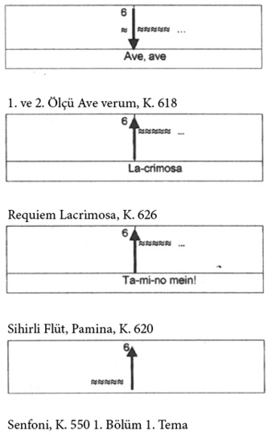

Kilise Müziği
On altı yaşından itibaren on yıla yakın bir süre Salzburg Başpiskoposu’nun hizmetinde çalışan bir bestecinin ağırlıklı olarak dini müzikler yapması beklenir. Ancak Mozart için böyle bir şey söz konusu değildir. Bunun başlıca nedeni, onun başpiskoposun hizmetinde çalıştığı on yıl içinde eğitim ve konser amacıyla sık sık uzun süreli gezilere çıkmasıdır. 1777 yılında bu görevinden ayrılır, 1779’da aynı göreve geri döner, opera şefi ve saray orgcusu olarak çalışmaya başlar, 1781’de geri dönmemek üzere görevinden ayrılarak Viyana’ya gider. O günden sonra neredeyse –birkaç istisna dışında– hiç kilise müziği bestelemez.
Mozart’ın Salzburg Başpiskoposluğu’nun hizmetinde çalıştığı döneme dair bu kadar bilgi yeter. O dönemde yaptığı bestelere bakacak olursak; Salzburg’da bulunduğu dönemde bir dizi opera (Lucio Silla, Sözde Bahçıvan Kız, Çoban Kral, Zaide ve İdomeneo) Yaylı Çalgılar Dörtlüsü, senfoni, piyano ve keman konçertosu, serenat, divertimento, piyano sonatı, bale ve sahne müziği ile birlikte on sekiz ayin, sekiz litani, vesperler ve küçük kilise müziklerini içeren dini müzikler de yaptığını görürüz. Mozart, Prens Başpiskopos Sigismund Christoph Graf Schrattenbach gibi cömert birinin hizmetindeyken tüm bu eserleri yaratabilmiştir. Onun ardından gelen açık görüşlü Başpiskopos Colloredo, düzen ve görev bilincine önem verse de Mozart onunla pek anlaşamaz. 1772’de bu başpiskoposun göreve başlamasıyla Mozart’ın ekstra işler alma özgürlüğü gitgide kısıtlanır. Bu vasiliğe (Mozart’ın tabiriyle) duyduğu kızgınlık aylar ve yıllar boyu öyle büyür ki sonunda şöyle yorumlarla dışa vurulur: “Birinin beni küçümsemesi, hor görmesi beni bir şebek kadar onurlandırır.”
Kont Arco 1781 yılında Mozart’ın istifa dilekçesini doğrudan başpiskoposa değil de duyduğu saygıdan ötürü babası Leopold’e verince aralarındaki gerginlik iyice büyür. Başlangıçta aralarında anlaşmazlık biçiminde baş gösteren durum, zamanla inada dönüşür ve sonunda Mozart’ın başpiskoposa ve sarayın ileri gelenlerine karşı duyduğu nefretle sonuçlanır. Mozart 1781 yılı Haziran ayında zavallı Kont Arco hakkında defterine şöyle yazar: “Onu gördüğüm yerde kıçına bir tekme atacağım kesin!”
Kilise müzikleri arasında üç vokal eseri öne çıkar. Bunlardan ilki, 1782 yılında bestelediği büyük Do Minör Büyük Ayini’dir. Mozart babasına yazdığı 4 Ocak 1783 tarihli mektupta bu eserinden şöyle bahseder: “Notalar amaçsızca kâğıda döküldü, –buna yüreğimin ta içinden söz verdim ve bu sözümü tutmayı umuyorum– söz verdiğimde karımla henüz evlenmemiştim.” Kısacası Mozart hastalığı yendikten sonra Constanze ile evlenmeyi planlar. Bu ayin de bahanesi olur. Evlenirler, ancak bu eser yarım kalır. Yine de Kyrie, Gloria, Sanctus, Benedictus ve birkaç başka parçası ortaya çıkmıştır.
Mozart’ın öne çıkan bir diğer kilise müziği de Requiem’dir. Birçok efsaneye konu olan bu eser, ona 1791 yılında sipariş edilmiştir ve o da yarım kalan eserlerinden biridir. Ondan önce bestecinin en popüler eserine değinmek gerekir: Ave verum corpu. Bugün tüm korolarca sevilen bir eserdir. Büyük olasılıkla Anton Stoll için Baden’de yazılmıştır.
Ave verum corpus, K. 618: Orijinalde yaylı çalgılar dörtlüsü ve org eşliğinde dört sesli bir koro tarafından seslendirilen bir eserdir. Bazen üç dakikalık bir eser olarak enstrümansız da icra edilir. Bu son derece anlaşılır bir durumdur, çünkü iki ölçülük açılış müziği ve arada ve sondaki üç ölçülük müziğin pek bir katkısı yoktur, sadece hoş bir fon müziği oluştururlar. Koronun kullandığı sesleri kullanırlar (re-la-re). Koronun icrası huzur ve güzelliği ifade eder. Yalnızca son bölümde “ölüm” kısmındaki basta beşi aşkın kromatik adım ve modüle eden en yüksek ses ölüm anında duyulan derin acı olarak öne çıkar. Başlangıçtaki yüksek duygusal etkiyi Mozart bir altılı ile sağlamıştır; bu altılı, onun küçük alanda melodi seslerini sığdırarak elde ettiği büyük bir ses adımıdır. Burada farklı eserlerinin en duygusal, tutkulu bölümlerinden alınan dört örneğe yer veriyoruz, hepsinin de iki temel üzerine kurulduğu dikkati çekiyor:

Bu bağlantıyı kurduktan sonra anlamak için mutlaka Ave verum corpus’u dinlemenizi öneriyorum. Müzik kendi başına sözcüklerden çok daha fazlasını anlatıyor: simetri, huzur, melodik güzellik. Burada size yardımcı olacak tek şey müziği dinlemektir.